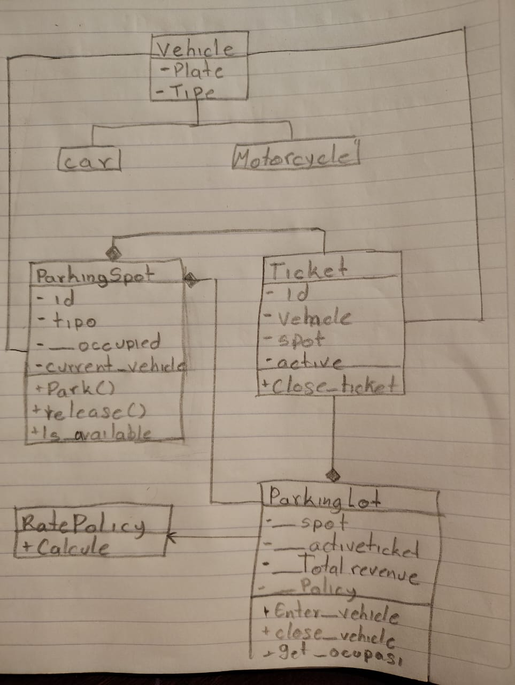
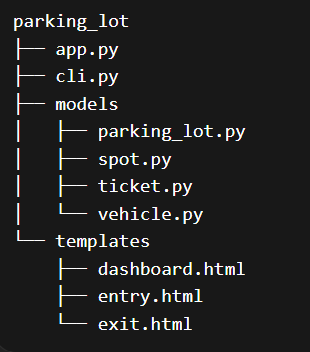
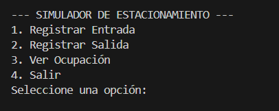
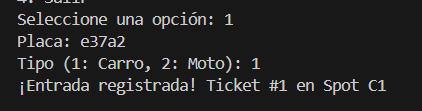
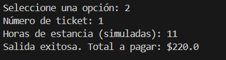
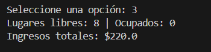
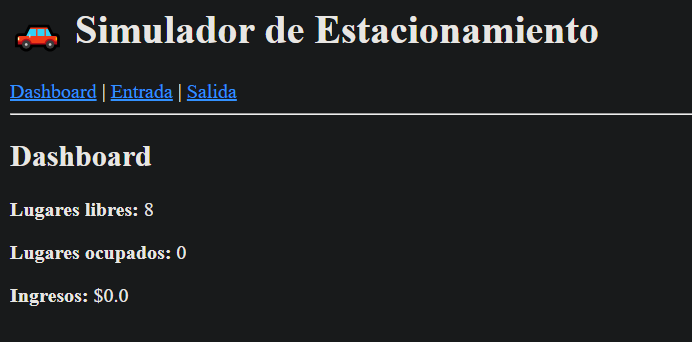
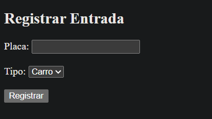
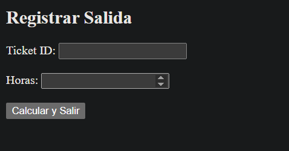

+++ date = '2026-02-16T18:07:31-08:00' draft = false title = 'Practica_2: Paradigma orientado a objetos' +++
En este documento se describe el proceso y los conceptos básicos de la programación orientada a objetos, a través del desarrollo de un programa sencillo implementado en el lenguaje Python utilizando este paradigma. El objetivo es facilitar la comprensión de dichos conceptos mediante un ejemplo práctico.
El programa consiste en un sistema que simula la gestión de un estacionamiento (parking), en el cual se pueden administrar los vehículos que ingresan y salen, así como calcular las ganancias generadas por cada automóvil.
El modelo del dominio se refiere a todas aquellas clases que representen la entidades del sistema, junto con sus atributos y sus metodos. Estas clases modelan objetos reales com opodrian ser un auto, una moto o un ticket

En el progrma se utilizaron 6 clases principales las cuales fueron parking_lot, parking_Spot, vehicle, car y motorcycle, ticket y rate_Policy donde cada un cumple con una funcion espesifica e importante:
ParkingLot Clase principal que administra el estacionamiento. Se encarga de registrar la entrada y salida de vehículos, asignar espacios disponibles y calcular los ingresos totales.
ParkingSpot Representa un espacio de estacionamiento. Controla si está ocupado o libre y qué tipo de vehículo puede aceptar.
Vehicle Clase base que representa un vehículo dentro del sistema.
Car / Motorcycle Subclases de Vehicle que permiten diferenciar tipos de vehículos y aplicar reglas específicas mediante herencia.
Ticket Representa el registro de entrada de un vehículo. Contiene información como el vehículo, el espacio asignado y el estado del ticket.
RatePolicy Define la lógica de cálculo de tarifas. Permite aplicar polimorfismo al cambiar la forma en que se calcula el costo.
Encapsulacion: es el principio de agrupar datos (atributos) y los métodos que operan sobre ellos en una única unidad, llamada clase, restringiendo el acceso directo a los componentes internos. Ejemplo dentro del programa:
class ParkingSpot:
def __init__(self, spot_id: str, allowed_type: str):
self.spot_id = spot_id
self.allowed_type = allowed_type
self.__occupied = False # estado protegido
self.current_vehicle = None
def park(self, vehicle):
self.__occupied = True
self.current_vehicle = vehicle
def release(self):
self.__occupied = False
self.current_vehicle = None
@property
def is_occupied(self):
return self.__occupied
en este fragmento se puede observar el encapsulamiento ya que __occupied es privada y no se puede modificar directamente, se accede con @property
abstraccion: La abstracción se aplica mediante la clase RatePolicy, que define una interfaz común para el cálculo de tarifas a través del método calculate. Esta clase no implementa directamente la lógica, sino que establece un contrato que deben seguir las clases que hereden de ella.
De esta manera, se separa la lógica de cálculo del resto del sistema, permitiendo cambiar o extender las políticas de cobro sin afectar otras partes del programa.
class RatePolicy:
def calculate(self, hours, vehicle_type):
pass
class HourlyRatePolicy(RatePolicy):
def calculate(self, hours, vehicle_type):
if vehicle_type == "CAR":
return hours * 20
else:
return hours * 10
composicion: La composición se aplica en la clase ParkingLot, la cual administra una colección de objetos ParkingSpot y Ticket. Estos objetos son creados y gestionados internamente por el estacionamiento, lo que indica una relación de “todo-parte”.
Por ejemplo, ParkingLot crea y almacena los espacios disponibles en una lista (__spots) y mantiene los tickets activos en una estructura (__active_tickets). Esto implica que los objetos ParkingSpot y Ticket dependen del ciclo de vida del ParkingLot.
class ParkingLot:
def __init__(self, total_car_spots, total_moto_spots, policy):
self.__spots = [] # contiene ParkingSpot
self.__active_tickets = {} # contiene Ticket
self.__policy = policy
# creación de spots (composición)
for i in range(total_car_spots):
self.__spots.append(ParkingSpot(f"C{i}", "CAR"))
for i in range(total_moto_spots):
self.__spots.append(ParkingSpot(f"M{i}", "MOTORCYCLE"))
Herencia: La herencia se aplica mediante la clase base Vehicle, de la cual derivan las clases Car y Motorcycle. Estas subclases reutilizan los atributos y comportamiento definidos en la clase padre, evitando duplicación de código.
class Vehicle:
def __init__(self, plate: str, vehicle_type: str):
self.plate = plate
self.vehicle_type = vehicle_type
class Car(Vehicle):
def __init__(self, plate: str):
super().__init__(plate, "CAR")
class Motorcycle(Vehicle):
def __init__(self, plate: str):
super().__init__(plate, "MOTORCYCLE")
Polimorfismo: El polimorfismo se aplica en la clase ParkingLot al utilizar la interfaz común calculate definida en RatePolicy. En el método exit_vehicle, el cálculo del costo se realiza mediante self.__policy.calculate(...), sin depender de una implementación específica.
def exit_vehicle(self, ticket_id: int, hours_simulated: float):
if ticket_id not in self.__active_tickets:
return None
ticket = self.__active_tickets.pop(ticket_id)
cost = self.__policy.calculate(hours_simulated, ticket.vehicle.vehicle_type)
ticket.spot.release()
ticket.close_ticket()
self.__total_revenue += cost
return cost
El sistema implementa el patrón de arquitectura Modelo-Vista-Controlador (MVC) utilizando Flask.
El Modelo (Model) está compuesto por las clases ubicadas en la carpeta models, donde se define la lógica del negocio del sistema, incluyendo la gestión de vehículos, espacios, tickets y tarifas.
La Vista (View) corresponde a las plantillas HTML ubicadas en la carpeta templates, las cuales permiten la interacción con el usuario mostrando información como la ocupación del estacionamiento y formularios para registrar entradas y salidas.
El Controlador (Controller) se implementa en el archivo app.py, donde se definen las rutas de Flask. Este componente recibe las solicitudes del usuario, invoca los métodos del modelo y devuelve las vistas correspondientes.
estructura y flujo del programa

Salidas en terminal
menu principal

registrar entrada

registrar salida

ocupados

Resultado esperado:
El vehículo se registra correctamente Se genera un ticket Se calcula el costo El lugar se libera
Resultado obtenido:
El sistema registró la entrada correctamente Se generó un ticket válido Se calculó el costo correctamente El espacio fue liberado exitosamente
Resultado esperado:
Los espacios ocupados aumentan Los espacios libres disminuyen
Resultado obtenido:
El sistema actualiza correctamente la ocupación Los datos mostrados coinciden con las acciones realizadas
En esta práctica se aplicaron los conceptos fundamentales de la programación orientada a objetos, como encapsulación, abstracción, herencia y polimorfismo, los cuales permiten organizar mejor el código y hacerlo más mantenible. Además, se implementó el patrón MVC utilizando Flask, separando la lógica del sistema, la interfaz y el control.
Gracias a esto, se logró desarrollar un sistema funcional de estacionamiento que es claro, escalable y fácil de modificar.
Ichi.pro. (s.f.). Conceptos de programación orientada a objetos: encapsulación, abstracción, herencia y polimorfismo. Recuperado de: https://ichi.pro/es/conceptos-de-programacion-orientada-a-objetos-oop-encapsulacion-abstraccion-herencia-y-polimorfismo-236476330085767
StudySmarter. (s.f.). Conceptos de POO: clases y objetos. Recuperado de: https://www.studysmarter.es/resumenes/ciencias-de-la-computacion/programacion-de-computadoras/conceptos-de-poo/
Historia de la Empresa. (s.f.). ¿Qué es la programación orientada a objetos?. Recuperado de: https://historiadelaempresa.com/que-es-la-programacion-orientada-a-objetos
Entrada principal

Registrar entrada nueva

Registrar salida
